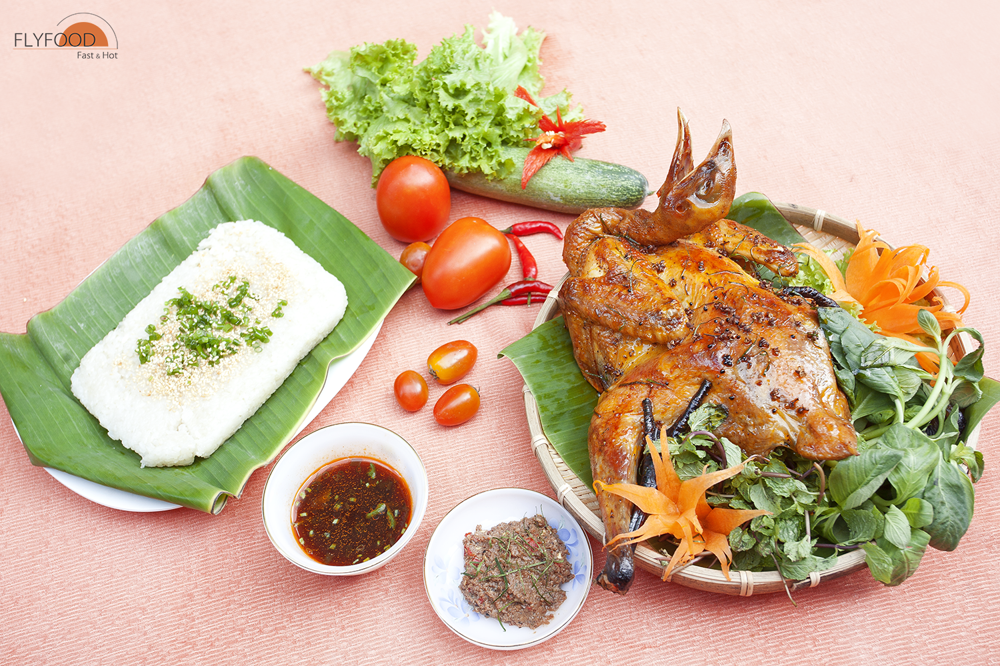
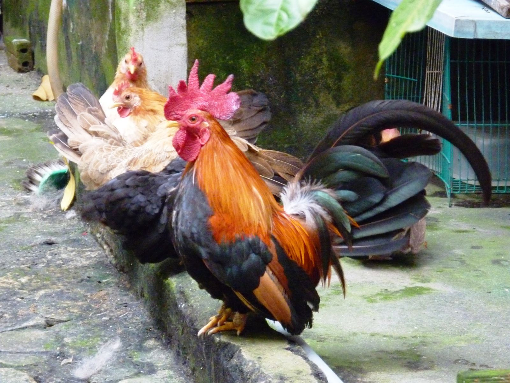
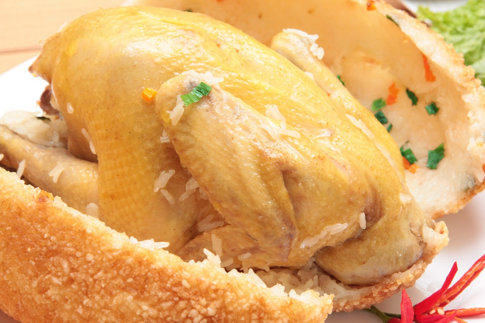
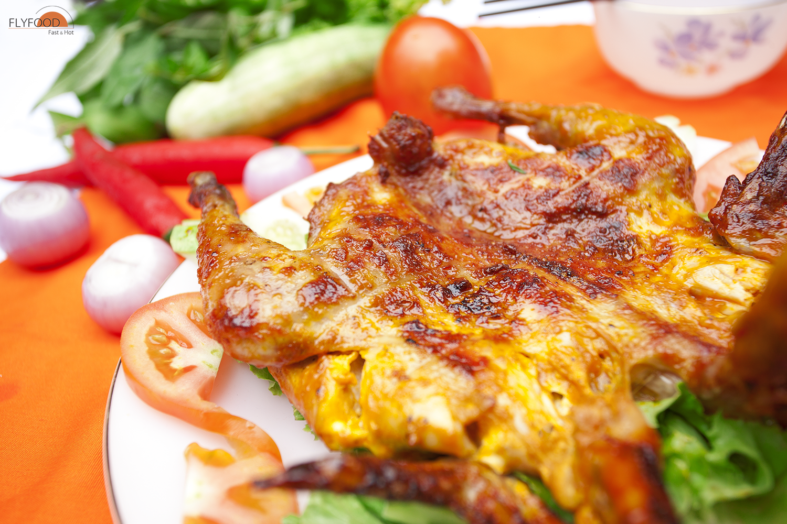

Các món ăn chế biến từ gà ngon
Các món ăn ngon từ gà hấp dẫn, độc đáo, thu hút thực khách ở Hà Nội
Gà ta lai nòi thả vườn làm nên các món ăn ngon
1. Gà quay
Gà quay là một món khá phổ biến tại Việt Nam, đây là món khoái khẩu của nhiều "tín đồ" mê thịt gà. Các chuyên gia ẩm thực FLyfood dày công sáng tạo mang đến cho quý khách món gà quay cao cấp, chất lượng hảo hạng, mùi vị lạ chưa từng có, "GÀ QUAY NGŨ VỊ". Với sự kết hợp 5 gia vị tinh tế, cùng kỹ thuật quay lu chuyên nghiệp và quy trình chế biến đảm bảo vệ sinh nghiêm ngặt, món GÀ QUAY NGŨ VỊ ăn kèm bánh bao ắt hẳn sẽ làm thỏa lòng các quý khách sành ăn các món gà ta ngon và quan tâm đến vấn đề an toàn vệ sinh thực phẩm.

Món ngon từ gà - Gà quay ngũ vị
Gà quay ăn kèm nước sốt gà theo công thức riêng của Flyfood cho món ăn thêm đậm đà! Món Gà Quay Ngũ Vị sẽ là một bữa tiệc thịnh soạn cho các thành viên yêu quý trong gia đình bạn.
2. Gà bó xôi truyền thống
Gà bó xôi truyền thống có cái tên khác khá thú vị: “gà không lối thoát”. Gà ta được hấp cách thủy, hỗn hợp nấm được sơ chế dồn vào dụng gà, xôi lá dứa bao bọc bên ngoài, chiên trong dầu thật nóng đề tạo lớp xôi chiên giòn bên ngoài. Trong lúc chiên với dầu thật nóng làm cho lượng nước và mùi của gà được tiết ra nhanh thấm vào xôi, tạo ra món ăn hoàn hảo.
Món ngon từ gà - Gà bó xôi truyền thống
Thịt gà thơm, ngọt, thấm gia vị, mềm. Nấm thơm giòn. Gà bó xôi chiên giữ nóng được 4 tiếng trong hộp chuyên dụng, tuy nhiên độ giòn của lớp xôi chiên giảm dần sau thời gian 60p từ lúc thành phẩm.
3. Cháo gà đậu xanh hạt sen
Cháo gà đậu xanh hạt sen là món ăn thanh đạm, vô cùng bổ dưỡng và tốt cho sức khỏe cho mọi thành viên trong gia đình đặc biệt là các bé, phụ nữ mang thai, người lớn tuổi. Những lúc mệt mỏi chỉ cần ăn bát cháo gà thì cơ thể sẽ lấy lại được cân bằng, chống mệt mỏi, tăng sức đề kháng cũng như cung cấp đầy đủ chất dinh dưỡng cho một bữa ăn.
Món ngon từ gà
Gà được dùng chế biến là gà tre lai nòi được nuôi theo thả vườn tự nhiên nên thịt rất thơm, mềm, dai và ngọt. Gạo thơm được nấu mềm nhừ, đậu xanh cà còn vỏ xanh và hạt sen vừa mềm tới thơm thơm, bùi bùi và béo béo cùng với nước dùng gà thơm lừng. Món cháo đậu xanh được ăn cùng với rau gém, muối tiêu canh làm cho món cháo thêm đậm đà và tăng thêm hương vị, ấm lòng cho những ngày mưa.
Thông tin xin liên hệ:
- Hotline: 0987.563.493
- Địa chỉ: Trung Kính, Yên Hòa, Cầu Giấy, HN
- Facebook: Thủy Trần
- Website: Thực phẩm sạch